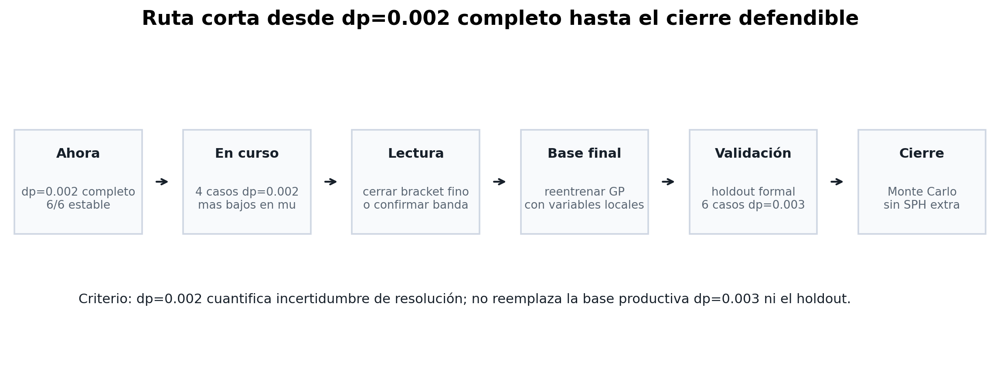
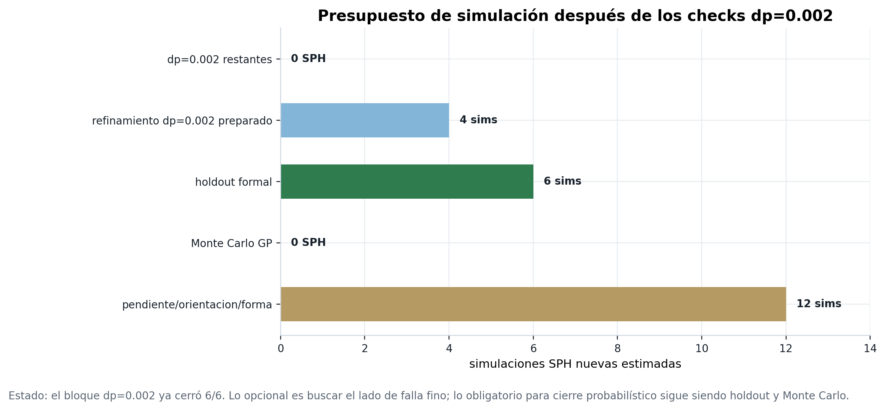

Secuencia de cierre metodológico
Con el dp=0.002 completo, el estado técnico se organiza en cuatro bloques: refinamiento fino, GP final, holdout formal y Monte Carlo.
Resumen corto
- Ahora mismo
- 6/6 dp=0.002 todos ESTABLE
- Más cercano
- 4.32% d_eq aún bajo 5% d_eq
- Cambios clase
- 4/6 banda de resolución
- Refinamiento
- 4 sims preparadas para buscar falla fina
- Holdout
- 6 sims validación formal dp=0.003
- Monte Carlo
- 0 SPH corre sobre GP final
- GP local actual
- 0.861 accuracy LOO preliminar
Los checks finos muestran sensibilidad de resolución cerca del umbral: seis casos quedaron ESTABLES en dp=0.002 y cuatro pares cambiaron desde FALLO marginal en dp=0.003.
Secuencia metodológica


Escenarios del refinamiento
Si aparece FALLO
El corte correspondiente queda con bracket fino en dp=0.002. Ese bracket se incorpora al GP final como evidencia de sensibilidad de resolución.
Si salen ESTABLES
La frontera fina queda desplazada hacia menor μ. El resultado se usa como cota de resolución y no cambia la resolución productiva principal.
Cierre probabilístico
La probabilidad de falla se calcula sobre el GP final. El holdout mide desempeño fuera del entrenamiento y el Monte Carlo propaga la incertidumbre del modelo en el espacio de variables.
Los casos dp=0.002 cuantifican sensibilidad de resolución cerca del umbral; el holdout y Monte Carlo cuantifican desempeño e incertidumbre probabilística.